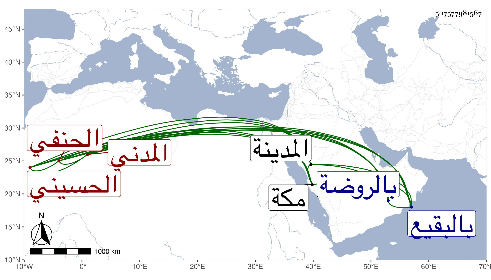

0902Sakhawi.DawLamic.ITO20230111-ara1.EIS1600.507577981567
Biography ID: 507577981567
348
أبو السعادات بن محمود بن عاذل الحسيني المدني الحنفي والد عبد الله وعبد الرحمن وأحمد وعبد الكبير المذكورين ويسمى محمدا . مات في يوم الأحد سابع عشري شعبان سنة سبع وسبعين وصلى عليه من الغد بالروضة ثم دفن بالبقيع عن سبع وستين وله اشتغال وفضل بل تلا للسبع على ابن عياش وابن الجزري وأبي محذورة ولم يخرج من المدينة إلا لمكة رحمه الله .
